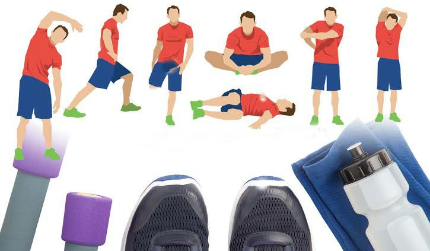

The importance of cooling down after you exercise
Cooling down after you exercise
A cool down is an essential part of your workout. A cool down can last for 3–10 minutes and includes stretches or gentle variations of the movements you did during your workout. The purpose of cooling down after exercise is to allow your heart rate and breathing to return to normal and to promote relaxation.
Important Benefits
You might be tempted to skip your post-workout cool down, but there are several reasons that cooling down is important.
Allows Heart Rate to Normalize
Most forms of exercise cause your heart rate to increase. Cardiovascular exercise, also called aerobic exercise, can increase your heart rate substantially.
Slows Breathing
When your heart rate increases with exercise, your breathing becomes deeper as well. This is a sign that you are working hard and burning more calories with exercise. A cool down allows your breath to gradually return to the same rhythm it had before you started your workout.
Improves Relaxation
One of the most important benefits of exercise is improved confidence. Your cool down is a great opportunity for you to reflect on your accomplishment and give yourself credit for the hard work you did during the workout. This can promote a sense of relaxation and well-being and boost your motivation.
How to Do a Cool Down
The way that you do a cool down often depends on the type of exercise you did during your workout. Most cool downs last 3–10 minutes and include slower, gentle movements and stretching exercises.
For example, to cool down after jogging you might do
a brisk walk for 2–3 minutes, then gradually taper your
pace to a stroll. At the end of your walk, you can do
standing stretches to increase the range of motion in
the leg muscles you just worked.
Finish your cool down with seated stretches to improve flexibility throughout the whole body and promote relaxation.
If your workout included more strength training, your cool down might include total body stretches to increase the range of motion in the joints you just worked. You'll want to be especially careful to stretch the joints that you just worked. So if you did biceps and triceps strengthening exercises, your cool down might include bicep and tricep stretches.
It is also helpful to include relaxation exercises in your cool down. This might include a few minutes of deep breathing or a yoga-style savasana. These mind-body exercises, along with gentle movements and stretching will help you to take advantage of your cool down and keep your body healthy.
Related Post: